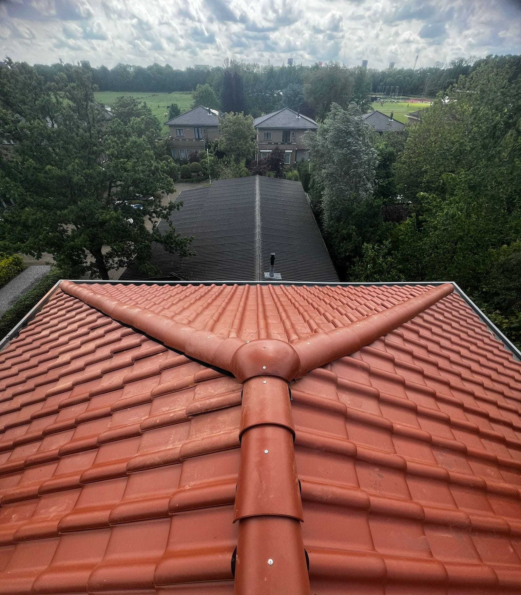

Onze Projecten


Expert in dakisolatie, zink Werk , hellende en platte daken
Neem Contact Op Ontdek Onze DienstenHoogwaardige thermische en akoestische isolatieoplossingen voor daken
Installatie en reparatie van Zink Werk en goten
Ontwerp en installatie van verschillende soorten hellende daken
Complete oplossingen voor platte daken en isolatie
AstroDak Service is gespecialiseerd in dakisolatie en zink Werk voor hellende en platte daken. Ons bedrijf is opgericht met de visie om complete en hoogwaardige oplossingen te bieden aan onze klanten.
We hebben een professioneel team met uitgebreide ervaring in dakbedekking en isolatie, en we gebruiken de nieuwste technieken en hoogwaardige materialen om de tevredenheid van onze klanten te garanderen.
We streven altijd naar de hoogste kwaliteits- en veiligheidsnormen in al onze projecten, met inachtneming van de afgesproken deadlines.
Onze deskundige dakdekkers komen bij u thuis om de situatie te bekijken en uw wensen te bespreken.
U ontvangt een vrijblijvende offerte op maat met een duidelijke prijsopgave.
Na akkoord gaan we direct aan de slag met minimale overlast voor u en uw omgeving.
We ruimen alles netjes op en controleren samen of het resultaat aan uw verwachtingen voldoet.
Met jaren ervaring in Nederland én het buitenland zorgen wij voor:
Astrodak Service – voor een dak waar u op kunt rekenen.
Gratis Offerte AanvragenAdres: Salahutunplien in Vught, Nederland
Telefoon: 06 84762946
E-mail: info.astrodakservice@gmail.com
Openingstijden: Maandag t/m Vrijdag, 8:00 - 17:00